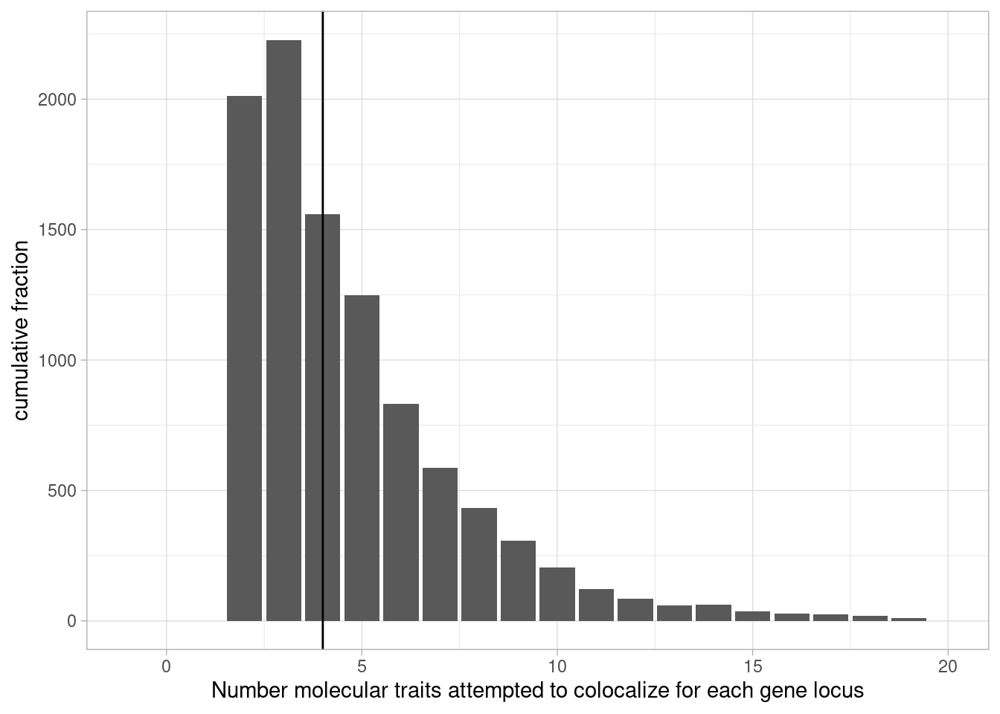
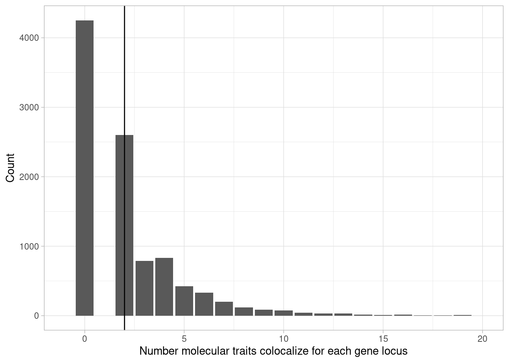
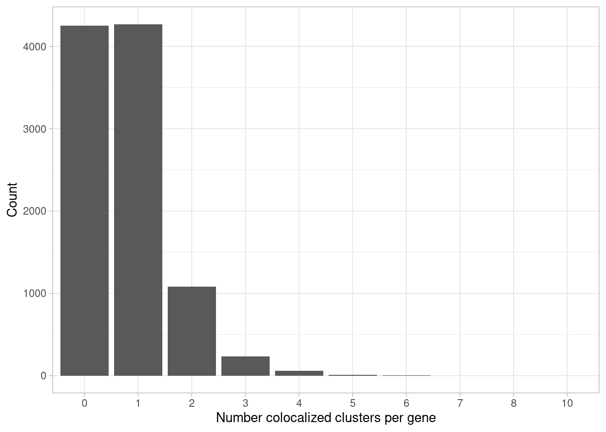
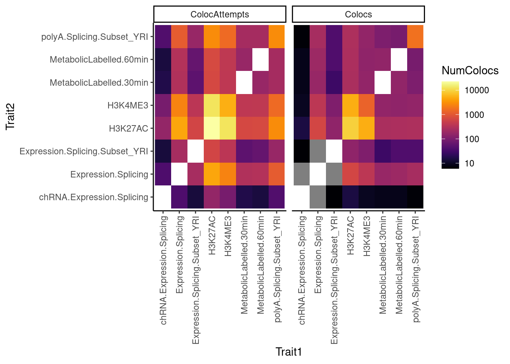
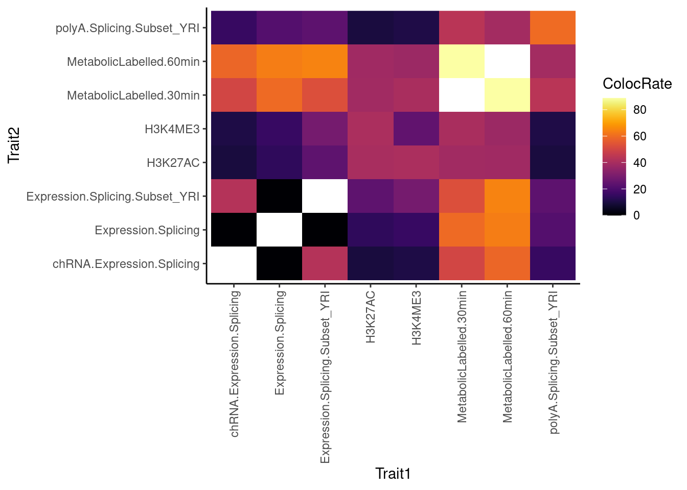
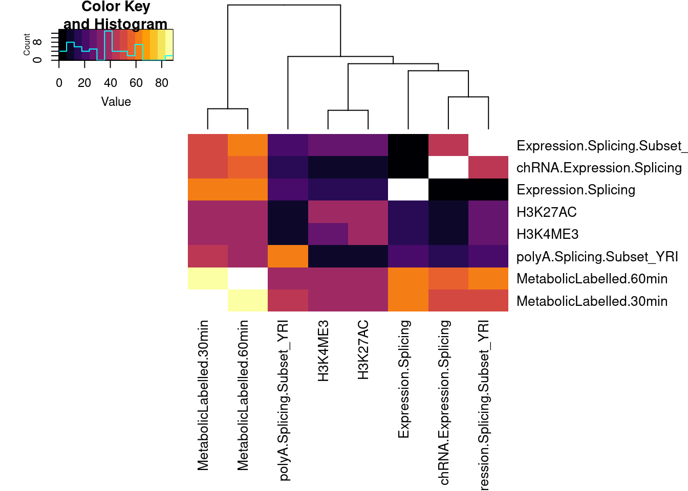
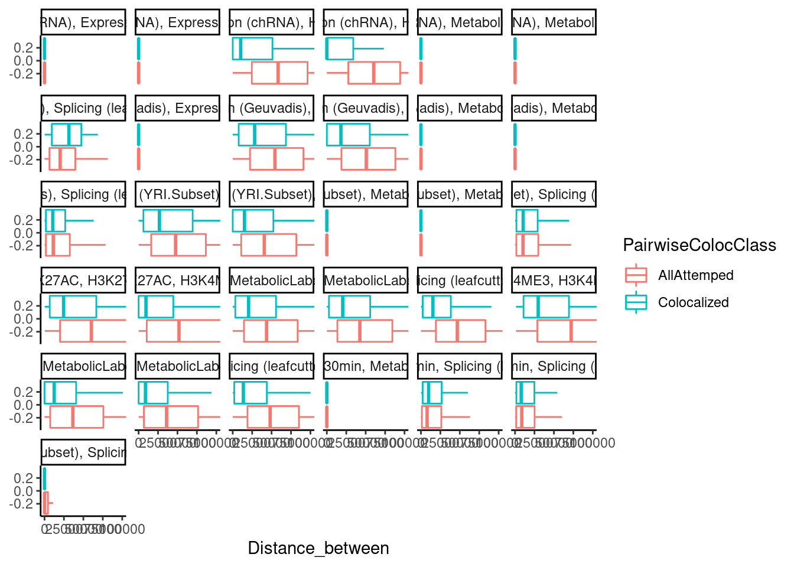
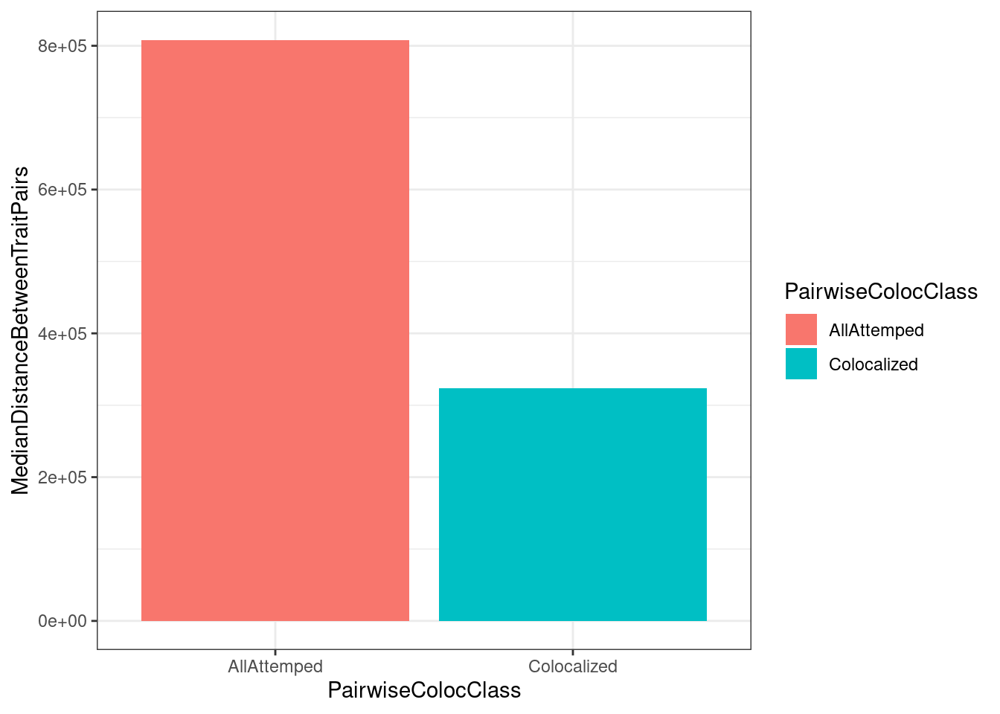
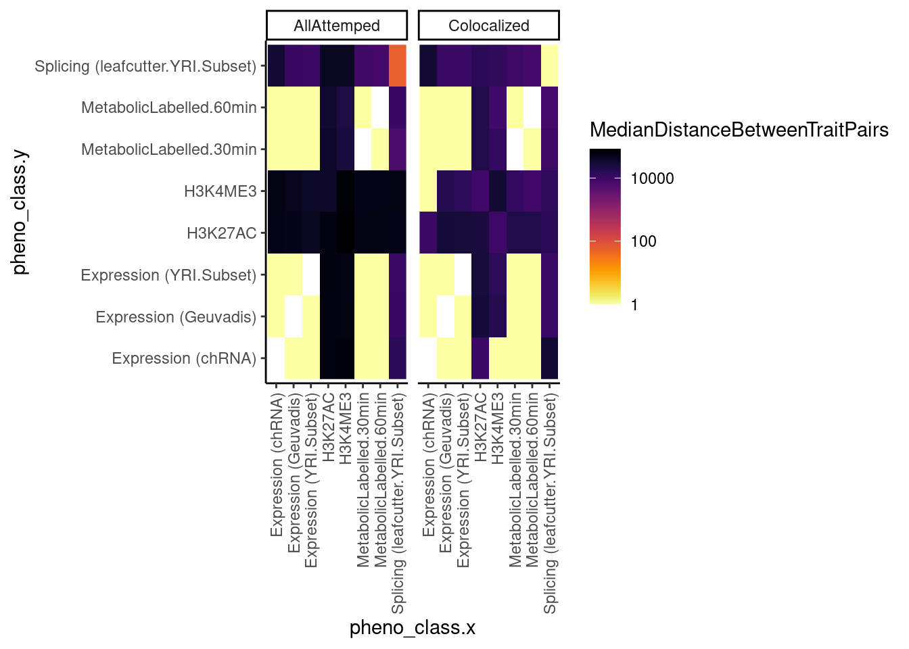

Last updated: 2022-01-24
Checks: 6 1
Knit directory: ChromatinSplicingQTLs/analysis/
This reproducible R Markdown analysis was created with workflowr (version 1.6.2). The Checks tab describes the reproducibility checks that were applied when the results were created. The Past versions tab lists the development history.
The R Markdown file has unstaged changes. To know which version of the R Markdown file created these results, you’ll want to first commit it to the Git repo. If you’re still working on the analysis, you can ignore this warning. When you’re finished, you can run wflow_publish to commit the R Markdown file and build the HTML.
Great job! The global environment was empty. Objects defined in the global environment can affect the analysis in your R Markdown file in unknown ways. For reproduciblity it’s best to always run the code in an empty environment.
The command set.seed(20191126) was run prior to running the code in the R Markdown file. Setting a seed ensures that any results that rely on randomness, e.g. subsampling or permutations, are reproducible.
Great job! Recording the operating system, R version, and package versions is critical for reproducibility.
Nice! There were no cached chunks for this analysis, so you can be confident that you successfully produced the results during this run.
Great job! Using relative paths to the files within your workflowr project makes it easier to run your code on other machines.
Great! You are using Git for version control. Tracking code development and connecting the code version to the results is critical for reproducibility.
The results in this page were generated with repository version cc1c333. See the Past versions tab to see a history of the changes made to the R Markdown and HTML files.
Note that you need to be careful to ensure that all relevant files for the analysis have been committed to Git prior to generating the results (you can use wflow_publish or wflow_git_commit). workflowr only checks the R Markdown file, but you know if there are other scripts or data files that it depends on. Below is the status of the Git repository when the results were generated:
Ignored files:
Ignored: .DS_Store
Ignored: .Rhistory
Ignored: .Rproj.user/
Ignored: ._.DS_Store
Ignored: analysis/.Rhistory
Ignored: code/.DS_Store
Ignored: code/.Rhistory
Ignored: code/._.DS_Store
Ignored: code/._README.md
Ignored: code/._dag.pdf
Ignored: code/._report.html
Ignored: code/.ipynb_checkpoints/
Ignored: code/.snakemake/
Ignored: code/Alignments/
Ignored: code/ENCODE/
Ignored: code/ExpressionAnalysis/
Ignored: code/Fastq/
Ignored: code/FastqFastp/
Ignored: code/FastqFastpSE/
Ignored: code/FastqSE/
Ignored: code/Gather_gwas_summary_stats/
Ignored: code/Genotypes/
Ignored: code/Multiqc/
Ignored: code/Multiqc_chRNA/
Ignored: code/PeakCalling/
Ignored: code/Phenotypes/
Ignored: code/PlotGruberQTLs/
Ignored: code/ProCapAnalysis/
Ignored: code/QC/
Ignored: code/QTLs/
Ignored: code/ReferenceGenome/
Ignored: code/Session.vim
Ignored: code/SplicingAnalysis/
Ignored: code/TODO
Ignored: code/bigwigs/
Ignored: code/bigwigs_FromNonWASPFilteredReads/
Ignored: code/config/.DS_Store
Ignored: code/config/._.DS_Store
Ignored: code/config/ExternalFastqDataAccessions/
Ignored: code/config/OldSamplesConfig/
Ignored: code/dag.pdf
Ignored: code/featureCounts/
Ignored: code/gwas_summary_stats/
Ignored: code/hyprcoloc/
Ignored: code/logs/
Ignored: code/notebooks/.ipynb_checkpoints/
Ignored: code/out.hap.ld
Ignored: code/out.log
Ignored: code/report.html
Ignored: code/rules/OldRules/
Ignored: code/scratch/
Ignored: code/scripts/GTFtools_0.8.0/
Ignored: code/scripts/__pycache__/
Ignored: code/scripts/liftOverBedpe/liftOverBedpe.py
Ignored: code/snakemake.log
Ignored: code/snakemake.sbatch.log
Ignored: data/._PRJEB1350_RunTable.Ding_etal_CTCF.txt
Ignored: data/._igsr_samples.tsv
Ignored: data/._list_gwas_summary_statistics_PMID27863252.csv
Ignored: data/GrowthNotes/._20210830_GrowthNotes_chRNA.ConcentrationsToReplate.txt
Untracked files:
Untracked: code/snakemake_profiles/slurm/__pycache__/
Unstaged changes:
Modified: analysis/20211217_GenewiseColocFirstLook.Rmd
Modified: analysis/20220114_ColocalizationEffectSizeCorrelations.Rmd
Modified: code/rules/report.smk
Modified: code/scripts/BamToBigwig.sh
Modified: code/scripts/GenometracksByGenotype
Note that any generated files, e.g. HTML, png, CSS, etc., are not included in this status report because it is ok for generated content to have uncommitted changes.
These are the previous versions of the repository in which changes were made to the R Markdown (analysis/20211217_GenewiseColocFirstLook.Rmd) and HTML (docs/20211217_GenewiseColocFirstLook.html) files. If you’ve configured a remote Git repository (see ?wflow_git_remote), click on the hyperlinks in the table below to view the files as they were in that past version.
| File | Version | Author | Date | Message |
|---|---|---|---|---|
| Rmd | a6be25f | Benjmain Fair | 2022-01-04 | remove pro-cap from leafcutter cluster rule |
| html | 237b549 | Benjmain Fair | 2021-12-28 | rebuilt some site analyses |
| Rmd | 89517ff | Benjmain Fair | 2021-12-22 | added genewise coloc rmd |
I have colocalized a bunch of molecular phenotypes in the window of each gene (Locus). Chromatin phenotypes and other genes must be within +/- 100kb of the gene. Splicing events must be within the gene. Nominal permutation Pvalues must be under 0.01. The real results are subject to change, since there are many more molecular phenotypes I haven’t included in this analysis, due to computational impatience, and that I am still collecting data. So I will evenetually include more phenotype which will change the results. More details of the methods are embedded in the snakemake pipeline. Here I will get some intuitions about the results.
First, load necessary libraries
library(tidyverse)
library(viridis)
library(gplots)
library(data.table)
dat <- read_tsv("../output/hyprcoloc_results/ForColoc/hyprcoloc.results.txt.gz", col_names = c("Locus", "iteration", 'ColocalizedTraits', 'ColocPr', 'RegionalPr', "topSNP", "TopSNPFinemapPr", "DroppedTrait"), skip=1)First question:
how many traits attempted to colocalized per gene:
Median <- dat %>%
mutate(NumTraits = str_count(ColocalizedTraits, ",") + 1) %>%
group_by(Locus) %>%
summarise(TotalTraitsAttemptedColocalization = sum(NumTraits)+1) %>%
pull(TotalTraitsAttemptedColocalization) %>% median()
dat %>%
mutate(NumTraits = str_count(ColocalizedTraits, ",") + 1) %>%
group_by(Locus) %>%
summarise(TotalTraitsAttemptedColocalization = sum(NumTraits)+1) %>%
ggplot(aes(x=TotalTraitsAttemptedColocalization)) +
geom_bar() +
ylab("cumulative fraction") +
xlab("Number molecular traits attempted to colocalize for each gene locus") +
xlim(c(-1,20)) +
geom_vline(xintercept=Median) +
theme_light()
| Version | Author | Date |
|---|---|---|
| 237b549 | Benjmain Fair | 2021-12-28 |
Median of 4 traits attempted to colocalize
Now how many traits actually colocalized per gene, and how many clusters
#How many traits colocalizes for each gene
Median <- dat %>%
mutate(NumTraits = str_count(ColocalizedTraits, ",") ) %>%
mutate(NumColocalizedTraits = case_when(
NumTraits > 0 ~ NumTraits +1,
TRUE ~ 0
)) %>%
group_by(Locus) %>%
summarise(TotalTraitsColocalized = sum(NumColocalizedTraits)) %>%
pull(TotalTraitsColocalized) %>% median()
#How many traits colocalizes for each gene
dat %>%
mutate(NumTraits = str_count(ColocalizedTraits, ",") ) %>%
mutate(NumColocalizedTraits = case_when(
NumTraits > 0 ~ NumTraits +1,
TRUE ~ 0
)) %>%
group_by(Locus) %>%
summarise(TotalTraitsColocalized = sum(NumColocalizedTraits)) %>%
ggplot(aes(x=TotalTraitsColocalized)) +
# stat_ecdf() +
# geom_histogram(binwidth = 1) +
geom_bar() +
ylab("Count") +
xlim(c(-1,20)) +
xlab("Number molecular traits colocalize for each gene locus") +
geom_vline(xintercept=Median) +
theme_light()
| Version | Author | Date |
|---|---|---|
| 237b549 | Benjmain Fair | 2021-12-28 |
#How many clusters
dat %>%
mutate(Cluster = !ColocalizedTraits == "None") %>%
group_by(Locus) %>%
summarize(NumColocClusters = sum(Cluster)) %>%
ggplot(aes(x=as.factor(NumColocClusters))) +
geom_bar() +
ylab("Count") +
# xlim(c(-1,10)) +
xlab("Number colocalized clusters per gene") +
theme_light()
Now how many colocalizations involve each type of molecular trait. I’m envisioning a matrix of how many colocalizations were attempted for each trait family pair, and how many times they were actually colocalized.
set.seed(0)
ToSplit <- dat %>%
select(Locus, ColocalizedTraits, iteration, DroppedTrait) %>%
# filter(Locus %in% (dat$Locus %>% unique() %>% head(200))) %>%
mutate(ColocalizedTraits = str_replace(ColocalizedTraits, paste0(Locus, ", "), "")) %>%
separate_rows(ColocalizedTraits, sep = ' ') %>%
# recode for better labelling
mutate(Trait = case_when(
ColocalizedTraits == "None" ~ DroppedTrait,
TRUE ~ ColocalizedTraits
)) %>%
select(Locus, Trait, iteration) %>%
group_by(Locus)
# Phenoclasses <- dat %>%
# pull(pheno_class) %>% unique()
#
# files <- paste0("../code/QTLs/QTLTools/", Phenoclasses, "/OnlyFirstReps.sorted.qqnorm.bed.gz")
#
# bed.list <- lapply(files, fread, sep='\t', select=2:6) %>%
# setNames(Phenoclasses)
# positions <- bind_rows(bed.list, .id="source") %>%
# unite(phenotype_full, source, pid, sep = ";") %>%
# select(-gid)
ToMat <- function(df){
xp <- df %>%
select(Trait, iteration) %>%
deframe()
mat <- apply(as.matrix(xp), 1,
function(x) as.numeric(x==as.matrix(xp)))
rownames(mat) <- colnames(mat)
mat <- as.matrix(mat)
diag(x=mat) <- NA
return(mat)
}
SumColocsByPhenotypeClass <- function(mat){
mat %>%
as.data.frame() %>%
rownames_to_column("Trait1") %>%
gather(key="Trait2", value="IsColoc", -Trait1) %>%
mutate(
Trait1 = str_replace(Trait1, "(.+?);.+", "\\1"),
Trait2 = str_replace(Trait2, "(.+?);.+", "\\1")
) %>%
drop_na() %>%
group_by(Trait1, Trait2) %>%
summarise(NumColocs = sum(IsColoc)) %>%
return()
}
SumColocAttemptsByPhenotypeClass <- function(mat){
mat %>%
as.data.frame() %>%
rownames_to_column("Trait1") %>%
gather(key="Trait2", value="IsColoc", -Trait1) %>%
mutate(
Trait1 = str_replace(Trait1, "(.+?);.+", "\\1"),
Trait2 = str_replace(Trait2, "(.+?);.+", "\\1")
) %>%
drop_na() %>%
mutate(IsColoc=1) %>%
group_by(Trait1, Trait2) %>%
summarise(NumColocs = sum(IsColoc)) %>%
return()
}
Split.list <- setNames(group_split(ToSplit), deframe(group_keys(ToSplit)))
Mat.list <- lapply(Split.list, ToMat)
## Some sanity checks that this code works as expected
Mat.list[["ENSG00000196735.13"]] %>%
write.table(row.names = F, col.names = F)NA 1 1 1 0 0 0 0 0 0 0 0 0 0 0 0 0 0 0 0 0 0 0 0 0 0 0 0 0 0 0 0 0 0 0 0 0 0 0
1 NA 1 1 0 0 0 0 0 0 0 0 0 0 0 0 0 0 0 0 0 0 0 0 0 0 0 0 0 0 0 0 0 0 0 0 0 0 0
1 1 NA 1 0 0 0 0 0 0 0 0 0 0 0 0 0 0 0 0 0 0 0 0 0 0 0 0 0 0 0 0 0 0 0 0 0 0 0
1 1 1 NA 0 0 0 0 0 0 0 0 0 0 0 0 0 0 0 0 0 0 0 0 0 0 0 0 0 0 0 0 0 0 0 0 0 0 0
0 0 0 0 NA 0 0 0 0 0 0 0 0 0 0 0 0 0 0 0 0 0 0 0 0 0 0 0 0 0 0 0 0 0 0 0 0 0 0
0 0 0 0 0 NA 1 1 1 0 0 0 0 0 0 0 0 0 0 0 0 0 0 0 0 0 0 0 0 0 0 0 0 0 0 0 0 0 0
0 0 0 0 0 1 NA 1 1 0 0 0 0 0 0 0 0 0 0 0 0 0 0 0 0 0 0 0 0 0 0 0 0 0 0 0 0 0 0
0 0 0 0 0 1 1 NA 1 0 0 0 0 0 0 0 0 0 0 0 0 0 0 0 0 0 0 0 0 0 0 0 0 0 0 0 0 0 0
0 0 0 0 0 1 1 1 NA 0 0 0 0 0 0 0 0 0 0 0 0 0 0 0 0 0 0 0 0 0 0 0 0 0 0 0 0 0 0
0 0 0 0 0 0 0 0 0 NA 1 1 0 0 0 0 0 0 0 0 0 0 0 0 0 0 0 0 0 0 0 0 0 0 0 0 0 0 0
0 0 0 0 0 0 0 0 0 1 NA 1 0 0 0 0 0 0 0 0 0 0 0 0 0 0 0 0 0 0 0 0 0 0 0 0 0 0 0
0 0 0 0 0 0 0 0 0 1 1 NA 0 0 0 0 0 0 0 0 0 0 0 0 0 0 0 0 0 0 0 0 0 0 0 0 0 0 0
0 0 0 0 0 0 0 0 0 0 0 0 NA 1 1 0 0 0 0 0 0 0 0 0 0 0 0 0 0 0 0 0 0 0 0 0 0 0 0
0 0 0 0 0 0 0 0 0 0 0 0 1 NA 1 0 0 0 0 0 0 0 0 0 0 0 0 0 0 0 0 0 0 0 0 0 0 0 0
0 0 0 0 0 0 0 0 0 0 0 0 1 1 NA 0 0 0 0 0 0 0 0 0 0 0 0 0 0 0 0 0 0 0 0 0 0 0 0
0 0 0 0 0 0 0 0 0 0 0 0 0 0 0 NA 1 0 0 0 0 0 0 0 0 0 0 0 0 0 0 0 0 0 0 0 0 0 0
0 0 0 0 0 0 0 0 0 0 0 0 0 0 0 1 NA 0 0 0 0 0 0 0 0 0 0 0 0 0 0 0 0 0 0 0 0 0 0
0 0 0 0 0 0 0 0 0 0 0 0 0 0 0 0 0 NA 0 0 0 0 0 0 0 0 0 0 0 0 0 0 0 0 0 0 0 0 0
0 0 0 0 0 0 0 0 0 0 0 0 0 0 0 0 0 0 NA 1 1 1 0 0 0 0 0 0 0 0 0 0 0 0 0 0 0 0 0
0 0 0 0 0 0 0 0 0 0 0 0 0 0 0 0 0 0 1 NA 1 1 0 0 0 0 0 0 0 0 0 0 0 0 0 0 0 0 0
0 0 0 0 0 0 0 0 0 0 0 0 0 0 0 0 0 0 1 1 NA 1 0 0 0 0 0 0 0 0 0 0 0 0 0 0 0 0 0
0 0 0 0 0 0 0 0 0 0 0 0 0 0 0 0 0 0 1 1 1 NA 0 0 0 0 0 0 0 0 0 0 0 0 0 0 0 0 0
0 0 0 0 0 0 0 0 0 0 0 0 0 0 0 0 0 0 0 0 0 0 NA 0 0 0 0 0 0 0 0 0 0 0 0 0 0 0 0
0 0 0 0 0 0 0 0 0 0 0 0 0 0 0 0 0 0 0 0 0 0 0 NA 1 1 0 0 0 0 0 0 0 0 0 0 0 0 0
0 0 0 0 0 0 0 0 0 0 0 0 0 0 0 0 0 0 0 0 0 0 0 1 NA 1 0 0 0 0 0 0 0 0 0 0 0 0 0
0 0 0 0 0 0 0 0 0 0 0 0 0 0 0 0 0 0 0 0 0 0 0 1 1 NA 0 0 0 0 0 0 0 0 0 0 0 0 0
0 0 0 0 0 0 0 0 0 0 0 0 0 0 0 0 0 0 0 0 0 0 0 0 0 0 NA 0 0 0 0 0 0 0 0 0 0 0 0
0 0 0 0 0 0 0 0 0 0 0 0 0 0 0 0 0 0 0 0 0 0 0 0 0 0 0 NA 1 0 0 0 0 0 0 0 0 0 0
0 0 0 0 0 0 0 0 0 0 0 0 0 0 0 0 0 0 0 0 0 0 0 0 0 0 0 1 NA 0 0 0 0 0 0 0 0 0 0
0 0 0 0 0 0 0 0 0 0 0 0 0 0 0 0 0 0 0 0 0 0 0 0 0 0 0 0 0 NA 0 0 0 0 0 0 0 0 0
0 0 0 0 0 0 0 0 0 0 0 0 0 0 0 0 0 0 0 0 0 0 0 0 0 0 0 0 0 0 NA 0 0 0 0 0 0 0 0
0 0 0 0 0 0 0 0 0 0 0 0 0 0 0 0 0 0 0 0 0 0 0 0 0 0 0 0 0 0 0 NA 1 0 0 0 0 0 0
0 0 0 0 0 0 0 0 0 0 0 0 0 0 0 0 0 0 0 0 0 0 0 0 0 0 0 0 0 0 0 1 NA 0 0 0 0 0 0
0 0 0 0 0 0 0 0 0 0 0 0 0 0 0 0 0 0 0 0 0 0 0 0 0 0 0 0 0 0 0 0 0 NA 0 0 0 0 0
0 0 0 0 0 0 0 0 0 0 0 0 0 0 0 0 0 0 0 0 0 0 0 0 0 0 0 0 0 0 0 0 0 0 NA 0 0 0 0
0 0 0 0 0 0 0 0 0 0 0 0 0 0 0 0 0 0 0 0 0 0 0 0 0 0 0 0 0 0 0 0 0 0 0 NA 0 0 0
0 0 0 0 0 0 0 0 0 0 0 0 0 0 0 0 0 0 0 0 0 0 0 0 0 0 0 0 0 0 0 0 0 0 0 0 NA 0 0
0 0 0 0 0 0 0 0 0 0 0 0 0 0 0 0 0 0 0 0 0 0 0 0 0 0 0 0 0 0 0 0 0 0 0 0 0 NA 0
0 0 0 0 0 0 0 0 0 0 0 0 0 0 0 0 0 0 0 0 0 0 0 0 0 0 0 0 0 0 0 0 0 0 0 0 0 0 NAMat.list[[100]] %>%
write.table(row.names = T, col.names = F)"Expression.Splicing;H3K4ME3;H3K4ME3_peak_17313," NA 1 0 0 0
"polyA.Splicing.Subset_YRI;16:579180:580858:clu_32206_+" 1 NA 0 0 0
"H3K27AC;H3K27AC_peak_34486," 0 0 NA 1 0
"H3K4ME3;H3K4ME3_peak_17317" 0 0 1 NA 0
"H3K4ME3;H3K4ME3_peak_17316" 0 0 0 0 NASumColocs.list <- lapply(Mat.list, SumColocsByPhenotypeClass)
SumAttemptedColocs.list <- lapply(Mat.list, SumColocAttemptsByPhenotypeClass)
Coloc.ByClass.Summary <- bind_rows(SumColocs.list, .id="Locus") %>%
inner_join(
bind_rows(SumAttemptedColocs.list, .id="Locus"),
by=c("Trait1", "Trait2", "Locus"),
suffix = c(".Success", ".Attemped")
) %>%
# filter(Locus == "ENSG00000114378.17")
group_by(Trait1, Trait2) %>%
summarise(
Colocs = sum(NumColocs.Success),
ColocAttempts = sum(NumColocs.Attemped))
Coloc.ByClass.Summary %>%
arrange(Trait1, Trait2) %>%
gather(key="AttemptOrSuccess", value="NumColocs", Colocs, ColocAttempts) %>%
mutate(NumColocs = NumColocs/2) %>%
ggplot(aes(x=Trait1, y=Trait2, fill=NumColocs)) +
geom_raster() +
scale_fill_viridis(trans="log10", option="B") +
facet_wrap(~AttemptOrSuccess) +
theme_classic() +
theme(axis.text.x = element_text(angle = 90, vjust = 0.5, hjust=1))
| Version | Author | Date |
|---|---|---|
| 237b549 | Benjmain Fair | 2021-12-28 |
#Plot fill color by rate
Coloc.ByClass.Summary %>%
mutate(ColocRate = Colocs/ColocAttempts * 100) %>%
arrange(Trait1, Trait2) %>%
ggplot(aes(x=Trait1, y=Trait2, fill=ColocRate)) +
geom_raster() +
scale_fill_viridis(option="B") +
theme_classic() +
theme(axis.text.x = element_text(angle = 90, vjust = 0.5, hjust=1))
| Version | Author | Date |
|---|---|---|
| 237b549 | Benjmain Fair | 2021-12-28 |
Coloc.ByClass.Summary.ForHeatmap <- Coloc.ByClass.Summary %>%
mutate(ColocRate = Colocs/ColocAttempts * 100) %>%
select(Trait1, Trait2, ColocRate)
Coloc.ByClass.Summary.ForHeatmap %>%
rename(Trait1=Trait2, Trait2=Trait1) %>%
bind_rows(Coloc.ByClass.Summary.ForHeatmap) %>%
distinct(.keep_all=T) %>%
pivot_wider(names_from = "Trait1", values_from = "ColocRate", values_fill=NA, names_sort=T) %>%
column_to_rownames("Trait2") %>%
as.matrix() %>%
# heatmap.2(trace="none", col=brewer.pal(51,"Spectral"))
# heatmap.2(trace="none", col=colorpanel(75, "blue", "black", "yellow"), cexRow = 1, cexCol = 1, offsetRow=0, offsetCol = 0, margins=c(11,11), dendrogram = "column")
heatmap.2(trace="none", col=viridis(15, option="B"), cexRow = 1, cexCol = 1, offsetRow=0, offsetCol = 0, margins=c(11,11), dendrogram = "column")
Now let’s look at the distance between colocalized trait pairs, for different phenotype classes
DatToPlotDist <- dat %>%
select(Locus, ColocalizedTraits, iteration, DroppedTrait) %>%
separate_rows(ColocalizedTraits, sep = ', ') %>%
gather(key = "ColocalizationStatus", value="phenotype_full", ColocalizedTraits, DroppedTrait) %>%
filter(!is.na(phenotype_full)) %>%
filter(!phenotype_full == "None") %>%
mutate(pheno_class = str_replace(phenotype_full, "(.+?);.+$", "\\1"))
Phenoclasses <- DatToPlotDist %>%
pull(pheno_class) %>% unique()
files <- paste0("../code/QTLs/QTLTools/", Phenoclasses, "/OnlyFirstReps.sorted.qqnorm.bed.gz")
bed.list <- lapply(files, fread, sep='\t', select=2:6) %>%
setNames(Phenoclasses)
positions <- bind_rows(bed.list, .id="source") %>%
unite(phenotype_full, source, pid, sep = ";") %>%
select(-gid)
head(positions) phenotype_full start end strand
1: polyA.Splicing.Subset_YRI;1:15947:16607:clu_1_- 15947 16607 -
2: polyA.Splicing.Subset_YRI;1:16310:16607:clu_1_- 16310 16607 -
3: polyA.Splicing.Subset_YRI;1:17055:17233:clu_2_- 17055 17233 -
4: polyA.Splicing.Subset_YRI;1:17055:17915:clu_2_- 17055 17915 -
5: polyA.Splicing.Subset_YRI;1:17368:17606:clu_2_- 17368 17606 -
6: polyA.Splicing.Subset_YRI;1:17368:17915:clu_2_- 17368 17915 -DatToPlotDist <- DatToPlotDist %>%
left_join(positions, by="phenotype_full")
GeneWithPromoterPhenotypes <- c("Expression.Splicing", "Expression.Splicing.Subset_YRI", "chRNA.Expression.Splicing", "MetabolicLabelled.60min", "MetabolicLabelled.30min")
PairwiseColocalizedPhenotypes <- DatToPlotDist %>%
# head(1000) %>%
mutate(start = case_when(
(pheno_class %in% GeneWithPromoterPhenotypes) & (strand=="-") ~ as.integer(end-1),
TRUE ~ start
)) %>%
mutate(end = case_when(
(pheno_class %in% GeneWithPromoterPhenotypes) & (strand=="+") ~ as.integer(start+1),
TRUE ~ end
)) %>%
mutate(pheno_class = recode(pheno_class,
Expression.Splicing = "Expression (Geuvadis)",
Expression.Splicing.Subset_YRI = "Expression (YRI.Subset)",
polyA.Splicing.Subset_YRI = "Splicing (leafcutter.YRI.Subset)",
chRNA.Expression.Splicing = "Expression (chRNA)")) %>%
# filter(Locus_snp == "ENSG00000002822.15_7:1998126:G:A") %>%
left_join(., ., by = c("Locus", "iteration")) %>%
filter(phenotype_full.x != phenotype_full.y) %>%
rowwise() %>%
mutate(name = toString(sort(c(phenotype_full.x,phenotype_full.y)))) %>%
distinct(Locus_snp, name, .keep_all = T) %>%
mutate(pheno_class_name = toString(sort(c(pheno_class.x,pheno_class.y)))) %>%
mutate(Distance_between = case_when(
# If features overlap
((start.x >= start.y) & (start.x <= end.y)) |
((end.x >= start.y) & (end.x <= end.y)) |
((start.x <= start.y) & (end.x >= end.y)) ~ as.integer(0),
TRUE ~ min(abs(end.x - start.y), abs(start.x - end.y))
)) %>%
mutate(PairwiseColocClass="Colocalized")
PairwiseColocalizedPhenotypes %>%
mutate(ColocStatus = paste(ColocalizationStatus.x, ColocalizationStatus.y)) %>%
pull(ColocStatus) %>% table().
ColocalizedTraits ColocalizedTraits
25421 PairwiseAllPhenotypes <- DatToPlotDist %>%
# head(1000) %>%
mutate(start = case_when(
(pheno_class %in% GeneWithPromoterPhenotypes) & (strand=="-") ~ as.integer(end-1),
TRUE ~ start
)) %>%
mutate(end = case_when(
(pheno_class %in% GeneWithPromoterPhenotypes) & (strand=="+") ~ as.integer(start+1),
TRUE ~ end
)) %>%
mutate(pheno_class = recode(pheno_class,
Expression.Splicing = "Expression (Geuvadis)",
Expression.Splicing.Subset_YRI = "Expression (YRI.Subset)",
polyA.Splicing.Subset_YRI = "Splicing (leafcutter.YRI.Subset)",
chRNA.Expression.Splicing = "Expression (chRNA)")) %>%
# filter(Locus_snp == "ENSG00000002822.15_7:1998126:G:A") %>%
left_join(., ., by = c("Locus")) %>%
filter(phenotype_full.x != phenotype_full.y) %>%
rowwise() %>%
mutate(name = toString(sort(c(phenotype_full.x,phenotype_full.y)))) %>%
distinct(Locus_snp, name, .keep_all = T) %>%
mutate(pheno_class_name = toString(sort(c(pheno_class.x,pheno_class.y)))) %>%
mutate(Distance_between = case_when(
# If features overlap
((start.x >= start.y) & (start.x <= end.y)) |
((end.x >= start.y) & (end.x <= end.y)) |
((start.x <= start.y) & (end.x >= end.y)) ~ as.integer(0),
TRUE ~ min(abs(end.x - start.y), abs(start.x - end.y))
)) %>%
mutate(PairwiseColocClass="AllAttemped")
PairwiseAllPhenotypes %>%
mutate(ColocStatus = paste(ColocalizationStatus.x, ColocalizationStatus.y)) %>%
pull(ColocStatus) %>% table().
ColocalizedTraits ColocalizedTraits ColocalizedTraits DroppedTrait
40632 25184
DroppedTrait DroppedTrait
12858 bind_rows(PairwiseAllPhenotypes, PairwiseColocalizedPhenotypes) %>%
mutate(Distance_between = Distance_between+1) %>%
ggplot(aes(x=Distance_between, color=PairwiseColocClass)) +
geom_boxplot(outlier.shape =NA) +
# geom_density() +
# scale_x_continuous(trans="log10") +
coord_cartesian(xlim=c(1,100000)) +
facet_wrap(~pheno_class_name) +
theme_classic()
Ok as expected, trait pairs that colocalize, for most all types of phenotypes, are closer than those that do not colocalize (compared to all traits that I attempted colocalization)… These plots might be kind of hard to interpret. Maybe a simpler summary is to present the median distance for those that do colocalize, versus those that I attempted colocalization for.
#
bind_rows(PairwiseAllPhenotypes, PairwiseColocalizedPhenotypes) %>%
group_by(pheno_class_name, PairwiseColocClass) %>%
summarize(MedianDistanceBetweenTraitPairs = median(Distance_between)) %>%
ggplot(aes(x=PairwiseColocClass, y=MedianDistanceBetweenTraitPairs, fill=PairwiseColocClass)) +
geom_col() +
# facet_wrap(~pheno_class_name) +
theme_bw()
DistancesToPlot <-bind_rows(PairwiseAllPhenotypes, PairwiseColocalizedPhenotypes) %>%
mutate(Distance_between = Distance_between+1) %>%
group_by(pheno_class.x, pheno_class.y, PairwiseColocClass) %>%
summarize(MedianDistanceBetweenTraitPairs = median(Distance_between))
DistancesToPlot %>%
rename(pheno_class.x=pheno_class.y, pheno_class.y=pheno_class.x) %>%
bind_rows(DistancesToPlot) %>%
ggplot(aes(x=pheno_class.x, y=pheno_class.y, fill=MedianDistanceBetweenTraitPairs)) +
geom_raster() +
# scale_fill_continuous(trans="log10") +
scale_fill_viridis(trans="log10", option="B", direction = -1) +
facet_wrap(~PairwiseColocClass) +
theme_classic() +
theme(axis.text.x = element_text(angle = 90, vjust = 0.5, hjust=1))
AsFacetsPlot <- DistancesToPlot %>%
rename(pheno_class.x=pheno_class.y, pheno_class.y=pheno_class.x) %>%
bind_rows(DistancesToPlot) %>%
mutate(MedianDistanceBetweenTraitPairs= MedianDistanceBetweenTraitPairs/1000) %>%
arrange(desc(pheno_class.x), pheno_class.y) %>%
ggplot(aes(x=PairwiseColocClass, y=MedianDistanceBetweenTraitPairs, fill=PairwiseColocClass)) +
geom_col() +
facet_grid(rows = vars(pheno_class.x), cols = vars(pheno_class.y), switch="y",labeller = label_wrap_gen(width=10)) +
ylab("Median distance between trait pairs (kb)") +
theme_bw() +
theme(axis.title.x=element_blank(),
axis.text.x=element_blank(),
axis.ticks.x=element_blank()) +
theme(strip.text = element_text(size = 6))ggsave("../code/scratch/PairwiseDistances.pdf", AsFacetsPlot, height=5, width=7)Some thing make sense. polyA.splicing traits often colocalize with other polyA.Splicing traits, which is unsurprisingly biologically and also technically since intra-cluster introns are not independent quantifications. H3K27ME3 and H3K4ME3 also tend to colocalize.
The colocalization rate might be more informative, in the sense that the results match by expectations for which traits might colocalize.
sessionInfo()R version 3.6.1 (2019-07-05)
Platform: x86_64-pc-linux-gnu (64-bit)
Running under: Scientific Linux 7.4 (Nitrogen)
Matrix products: default
BLAS/LAPACK: /software/openblas-0.2.19-el7-x86_64/lib/libopenblas_haswellp-r0.2.19.so
locale:
[1] LC_CTYPE=en_US.UTF-8 LC_NUMERIC=C
[3] LC_TIME=en_US.UTF-8 LC_COLLATE=en_US.UTF-8
[5] LC_MONETARY=en_US.UTF-8 LC_MESSAGES=en_US.UTF-8
[7] LC_PAPER=en_US.UTF-8 LC_NAME=C
[9] LC_ADDRESS=C LC_TELEPHONE=C
[11] LC_MEASUREMENT=en_US.UTF-8 LC_IDENTIFICATION=C
attached base packages:
[1] stats graphics grDevices utils datasets methods base
other attached packages:
[1] data.table_1.13.2 gplots_3.0.1.1 viridis_0.5.1
[4] viridisLite_0.3.0 forcats_0.4.0 stringr_1.4.0
[7] dplyr_0.8.3 purrr_0.3.4 readr_1.3.1
[10] tidyr_1.1.0 tibble_2.1.3 ggplot2_3.3.3
[13] tidyverse_1.3.0
loaded via a namespace (and not attached):
[1] Rcpp_1.0.5 lubridate_1.7.4 lattice_0.20-38
[4] gtools_3.8.1 assertthat_0.2.1 rprojroot_2.0.2
[7] digest_0.6.20 R6_2.4.0 cellranger_1.1.0
[10] backports_1.1.4 reprex_0.3.0 evaluate_0.14
[13] httr_1.4.1 pillar_1.4.2 rlang_0.4.10
[16] readxl_1.3.1 rstudioapi_0.10 gdata_2.18.0
[19] whisker_0.3-2 R.oo_1.22.0 R.utils_2.9.0
[22] rmarkdown_1.13 labeling_0.3 munsell_0.5.0
[25] broom_0.5.2 compiler_3.6.1 httpuv_1.5.1
[28] modelr_0.1.8 xfun_0.8 pkgconfig_2.0.2
[31] htmltools_0.3.6 tidyselect_1.1.0 gridExtra_2.3
[34] workflowr_1.6.2 fansi_0.4.0 crayon_1.3.4
[37] dbplyr_1.4.2 withr_2.4.1 later_0.8.0
[40] R.methodsS3_1.7.1 bitops_1.0-6 grid_3.6.1
[43] nlme_3.1-140 jsonlite_1.6 gtable_0.3.0
[46] lifecycle_0.1.0 DBI_1.1.0 git2r_0.26.1
[49] magrittr_1.5 scales_1.1.0 KernSmooth_2.23-15
[52] cli_2.2.0 stringi_1.4.3 farver_2.1.0
[55] fs_1.3.1 promises_1.0.1 xml2_1.3.2
[58] ellipsis_0.2.0.1 generics_0.0.2 vctrs_0.3.1
[61] tools_3.6.1 glue_1.3.1 hms_0.5.3
[64] yaml_2.2.0 colorspace_1.4-1 caTools_1.17.1.2
[67] rvest_0.3.5 knitr_1.23 haven_2.3.1